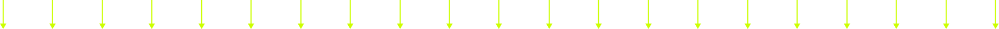
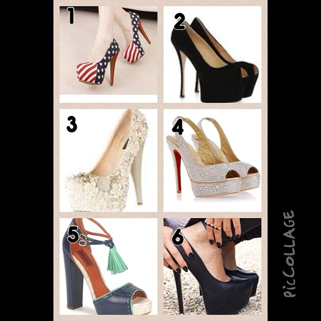
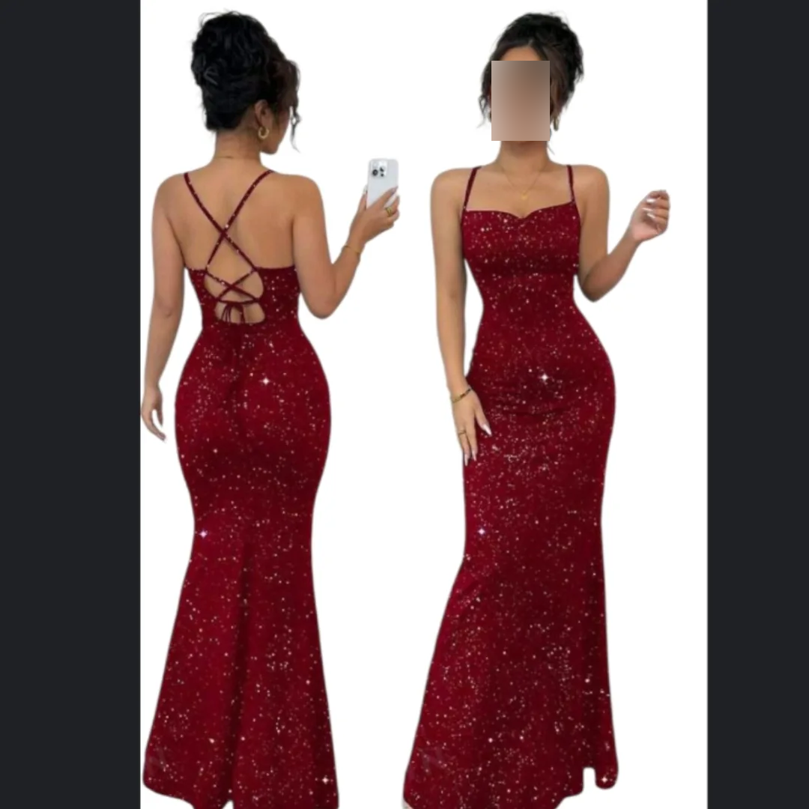
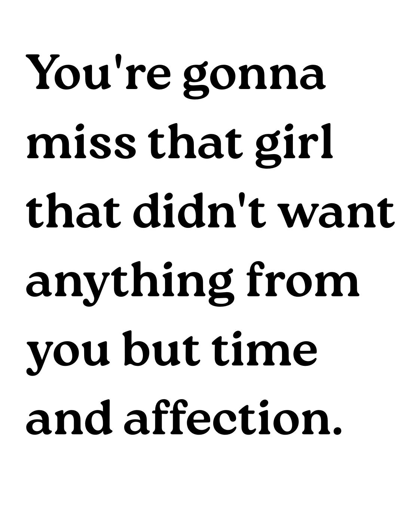
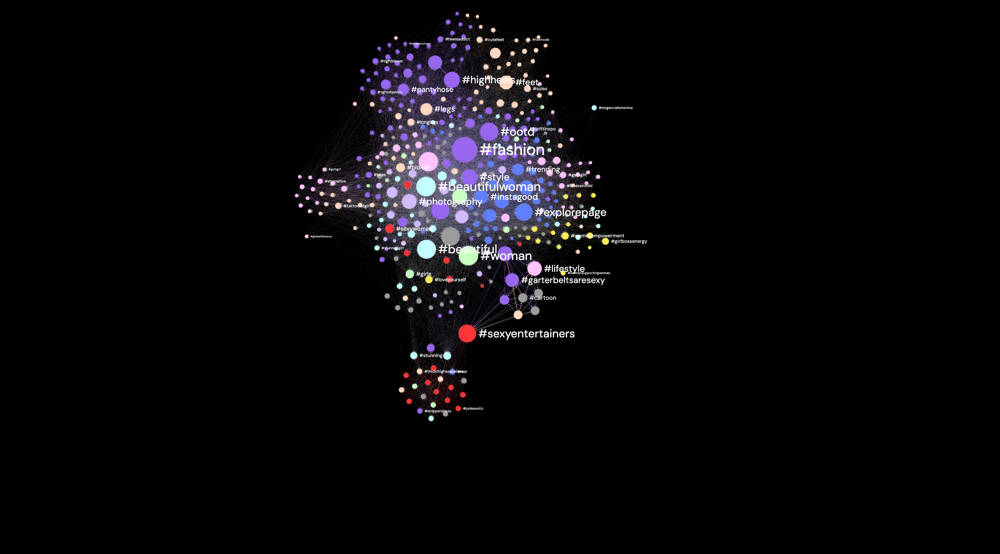

Mapping the sexualization of the female body on Instagram
A data-driven exploration of female body representation

How often do sexualised images appear on your instagram feed even when you are not looking for them?
What defines what is sexual or not?
Can an hashtag be sexual?
What appears when you search for this on Instagram?
#womanposts representing
the female body
were selected
in order to explore
the hashtags
associated with them



